PREFIX dbo: <http://dbpedia.org/ontology/>
PREFIX dbr: <http://dbpedia.org/resource/>
SELECT DISTINCT ?resource
WHERE {
?resource rdfs:label "Rome"@en .
}
ORDER BY ?resource
Obiettivo: questa query viene fatta per individuare la risorsa "Roma" in DBpedia attraverso la label in lingua inglese. In questo modo possiamo vedere l'IRI completo della risorsa e risalire al namespace utilizzato per le risorse nel grafo.
Output: ci viene mostrato l'IRI completo della risorsa e inoltre l'IRI di una categoria chiamata "Rome". Delle categorie ci occuperemo in seguito nell'analisi.
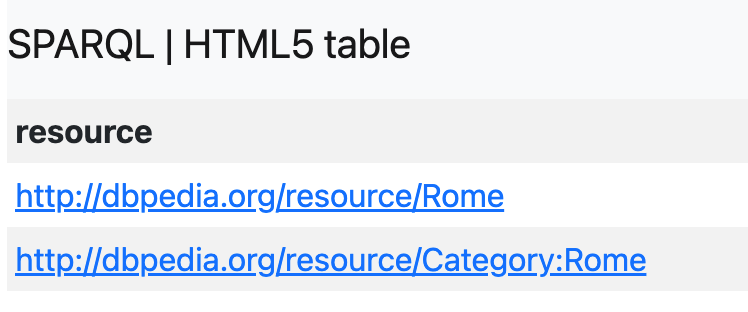
PREFIX dbo: <http://dbpedia.org/ontology/>
SELECT DISTINCT ?type
WHERE {
dbr:Rome a ?type .
}
ORDER BY ?type
Obiettivo: questa query verifica come l'entità "Roma" è modellata nell'ontologia di DBpedia. La variabile ?type recupera tutte le classi associate a "Roma", evitando i duplicati e ordinando l'output in ordine alfabetico.
Output: le classi associate a "Roma" sono principalmente
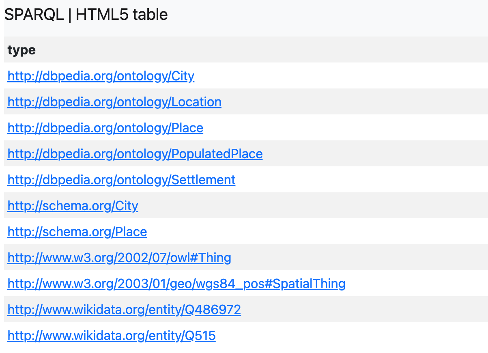
PREFIX dbr: <http://dbpedia.org/resource/>
SELECT DISTINCT ?property ?value
WHERE {
dbr:Rome ?property ?value .
}
ORDER BY ?property
LIMIT 200
Obiettivo: questa query cerca tutte le triple che hanno come soggetto "Roma" all'interno del Knowledge Graph. In questo modo si possono vedere quali informazioni DBpedia collega a Roma, sempre evitando i doppioni e ordinando l'output.
Output: Roma presenta diverse proprietà descrittive di tipo amministrativo/territoriale
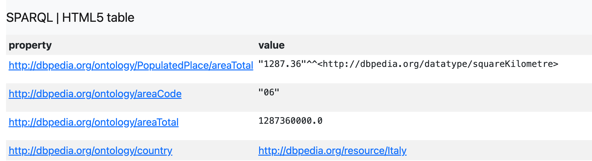
Alcune proprietà di tipo storico-politiche
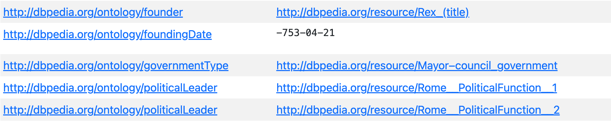
E alcune proprietà che la descrivono come suddivisione del Lazio e suddivisione in Città Metropolitana. Tuttavia non sono presenti riferimenti diretti ai suoi quartieri, rioni o zone urbane.
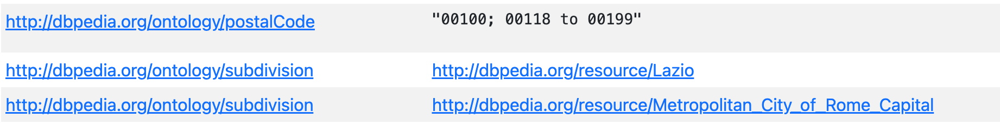
PREFIX dbr: <http://dbpedia.org/resource/>
SELECT DISTINCT ?property ?value
WHERE {
dbr:Trastevere ?property ?value .
FILTER REGEX(
STR(?property),
"district|quarter|neighbour|borough|subdivision|division",
"i"
)
}
ORDER BY ?property
Obiettivo: questa query verifica miratamente se esistono delle relazioni esplicite tra Roma e i suoi quartieri e suddivisioni urbane. Applicando il filtro, la query va a selezionare tra le proprietà associate a "Roma" solo quelle il cui IRI contiene parole legate ai quartieri.
Output: "Roma" presenta 3 proprietà associabili a suddivisioni urbane, ma nessuna è riconducibile a suddivisioni interne alla città.
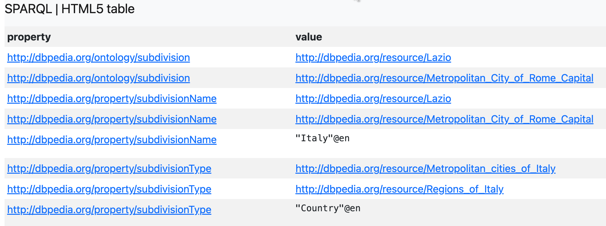
PREFIX dbr: <http://dbpedia.org/resource/>
SELECT DISTINCT ?property ?value
WHERE {
dbr:Trastevere ?property ?value .
}
ORDER BY ?property
LIMIT 200
Obiettivo: questa query ricerca all'interno del grafo le singole entità scelte per il progetto, adottando un approccio bottom-up. In particolare, si vanno a ricercare tutte le triple che hanno come soggetto la risorsa in questione, cambiando di volta in volta il nome della risorsa.
Nota - Eseguendo la query si è nostato che non tutte le risorse ptevano essere individuate semplicemente cambiando il nome dopo il prefisso dbr. Questo avviene perchè alcune delle entità scelte, come ad esempio "Trevi", presentano un nome ambiguo che potrebbe riferirsi anche ad altre risorse. Di conseguenza, prima di proseguire è stato ricostruito un elenco con gli IRI corretti e completi per tutte le risorse ambigue, attraverso il servizio DBpedia Lookup.
Output: tra le proprietà mostrate, alcune erano già state individuate per l'entità "Roma", come ad esempio dbo:settlementType.
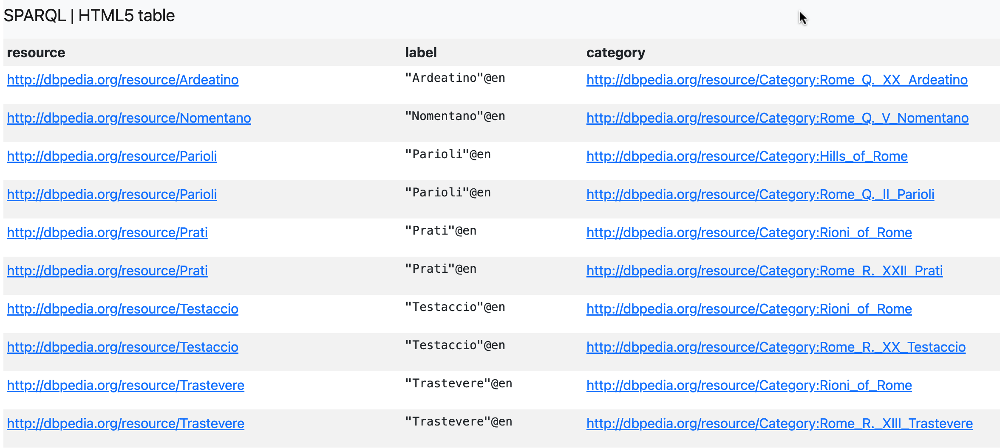
Si nota sicuramente una forte disomogeneità tra le entità, sia per quanto riguarda proprietà ontologiche o proprietà che riconducono a categorie, sia per la ricchezza di proprietà che le descrivono.
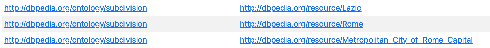
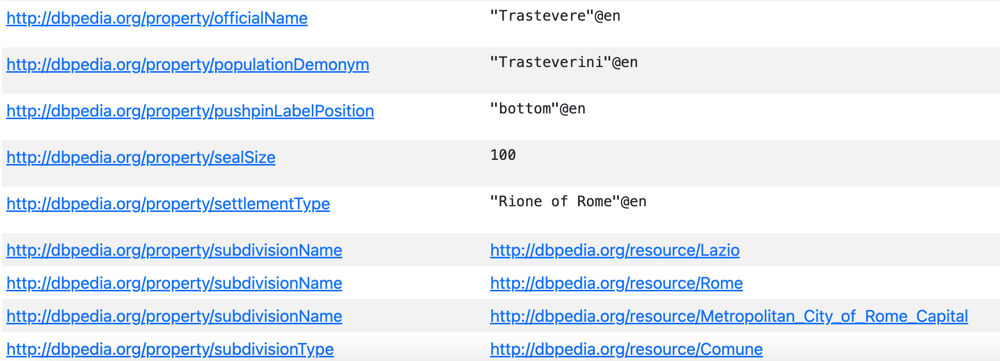
PREFIX dbo: <http://dbpedia.org/ontology/>
PREFIX dbr: <http://dbpedia.org/resource/>
PREFIX dbp: <http://dbpedia.org/property/>
SELECT ?livello ?property ?value
WHERE {
{
BIND("Ontology (dbo)" AS ?livello)
BIND(dbo:subdivision AS ?property)
dbr:Trastevere dbo:subdivision ?value .
}
UNION
{
BIND("Infobox (dbp)" AS ?livello)
BIND(dbp:settlementType AS ?property)
dbr:Trastevere dbp:settlementType ?value .
}
}
Obiettivo: questa query mostra la differenza tra il livello ontologico e il livello di modellazione derivato dagli Infobox Wikipedia, andando a cercare gli ogetti associati alle due tipologie di proprietà.
Output: si nota che in corrispondenza di proprietà ontologiche è associato un IRI di un'altra risorsa, mentre in corrispondenza delle altre proprietà i valor associati sono stringe di testo o numeri. (DA SISTEMARE)
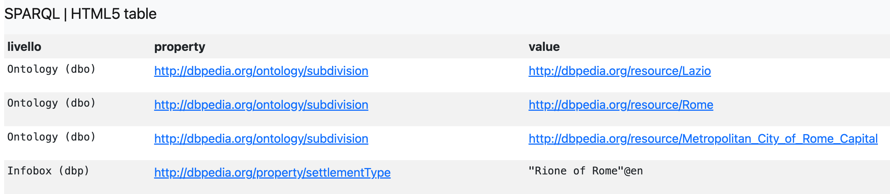
PREFIX dbo: <http://dbpedia.org/ontology/>
PREFIX dbr: <http://dbpedia.org/resource/>
SELECT DISTINCT ?resource ?type
WHERE {
VALUES ?resource {
dbr:Trastevere
<http://dbpedia.org/resource/Trevi_(rione_of_Rome)>
dbr:Prati
dbr:Testaccio
dbr:Parioli
<http://dbpedia.org/resource/San_Lorenzo_(Rome)>
dbr:Nomentano
dbr:Ardeatino
<http://dbpedia.org/resource/San_Basilio_(Rome)>
<http://dbpedia.org/resource/EUR,_Rome>
}
?resource rdf:type ?type .
}
ORDER BY ?resource ?type
Obiettivo: la query cerca tutti i tipi RDF associati alle dieci entità del progetto, mostrando chiaramente il livello di disomogeneità anticipato precedentemente.
Output: come anticipato, si nota forte disomogeneità nella modellazione. Alcune risorse sono generiche owl:Thing o geo:SpatialThing, altre sono un pò più definite come dbo:Settlement.
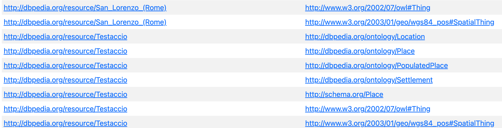
PREFIX dbr: <http://dbpedia.org/resource/>
PREFIX dct: <http://purl.org/dc/terms/>
SELECT DISTINCT ?resource ?category
WHERE {
VALUES ?resource {
dbr:Trastevere
<http://dbpedia.org/resource/Trevi_(rione_of_Rome)>
dbr:Prati
dbr:Testaccio
dbr:Parioli
<http://dbpedia.org/resource/San_Lorenzo_(Rome)>
dbr:Nomentano
dbr:Ardeatino
<http://dbpedia.org/resource/San_Basilio_(Rome)>
<http://dbpedia.org/resource/EUR,_Rome>
}
?resource dct:subject ?category .
}
ORDER BY ?resource ?category
Obiettivo: questa query mostra l'associazione delle entità anche a delle Category di DBpedia.
Output: le categorie non sono classi ontologiche, ma sono sempre derivate da categorie concettuali di Wikipedia. Si nota che molte risorse sono associate a categorie che rappresentano suddivisioni urbane romane.
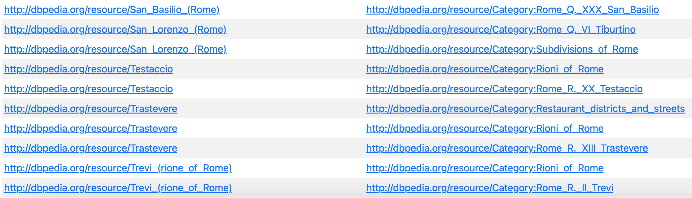
PREFIX dbo: <http://dbpedia.org/ontology/>
PREFIX dbp: <http://dbpedia.org/property/>
SELECT DISTINCT ?property (COUNT(?entita) AS ?conteggio)
WHERE {
?entita a dbo:CityDistrict .
?entita ?property ?valore .
FILTER REGEX(
STR(?property),
"safety|perceived|identity|urban.*identity|transformation|gentrific|nightlife|studentesco|commerciale|residenziale",
"i"
)
}
GROUP BY ?property
ORDER BY DESC(?conteggio)
Obiettivo: la query verifica che le proprietà che si andranno a proporre nei risultati non siano in alcun modo già formalizzate in DBpedia.
Output: la query conferma l'assenza di queste proprietà.